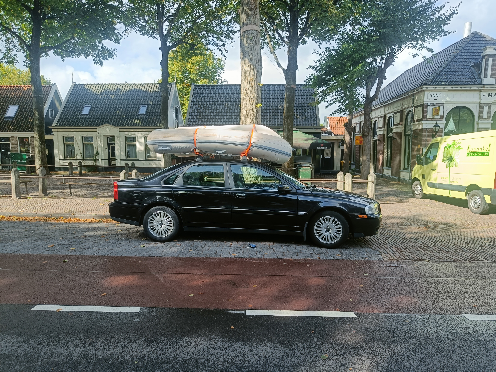
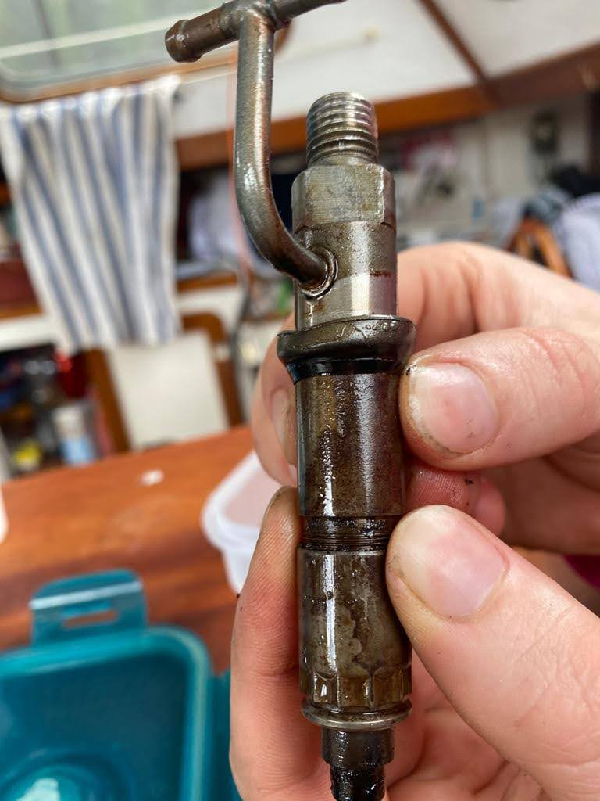
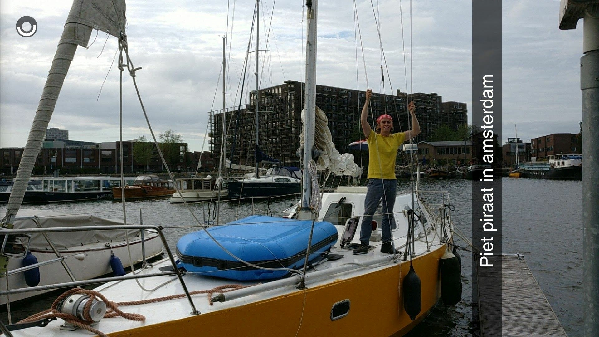
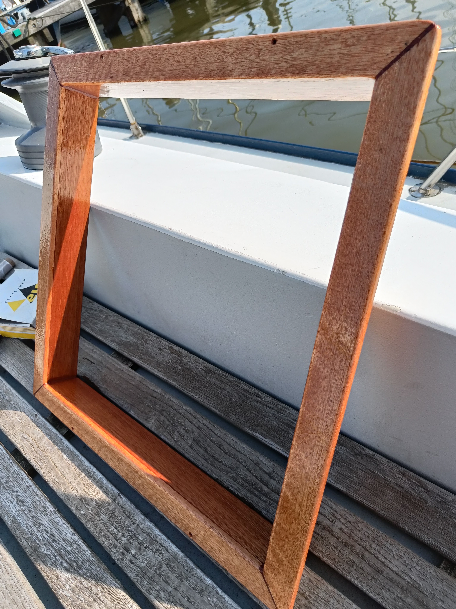
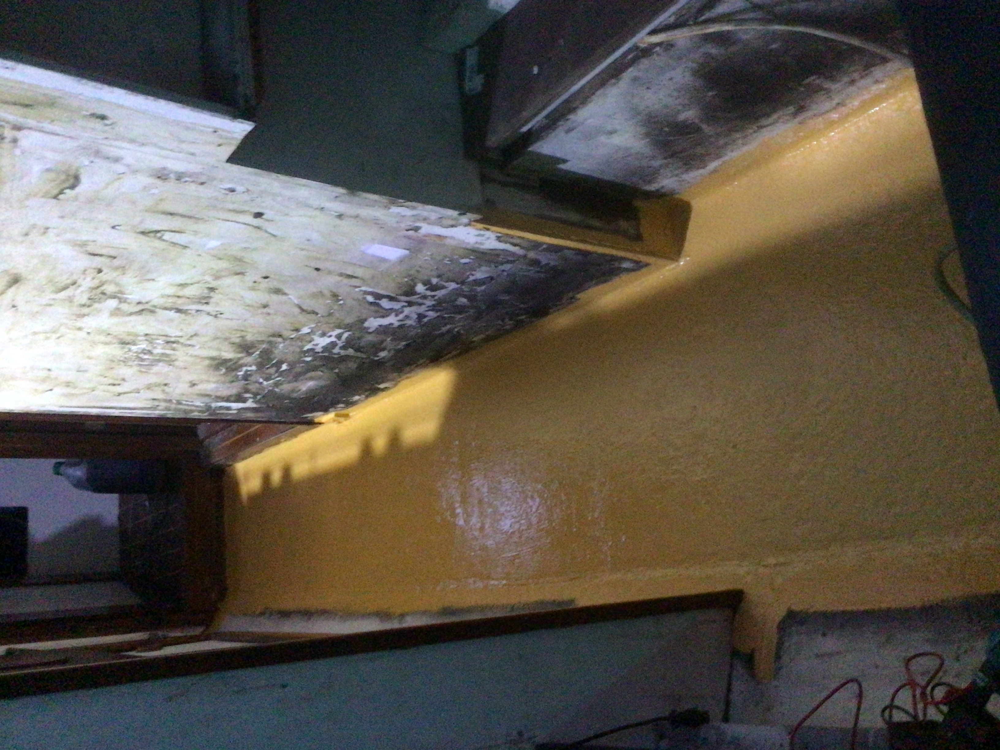
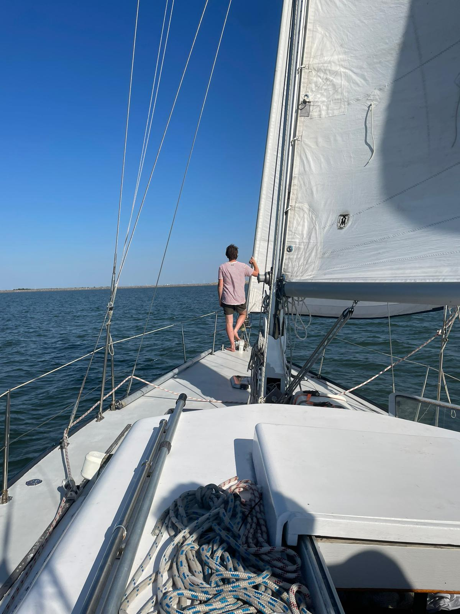
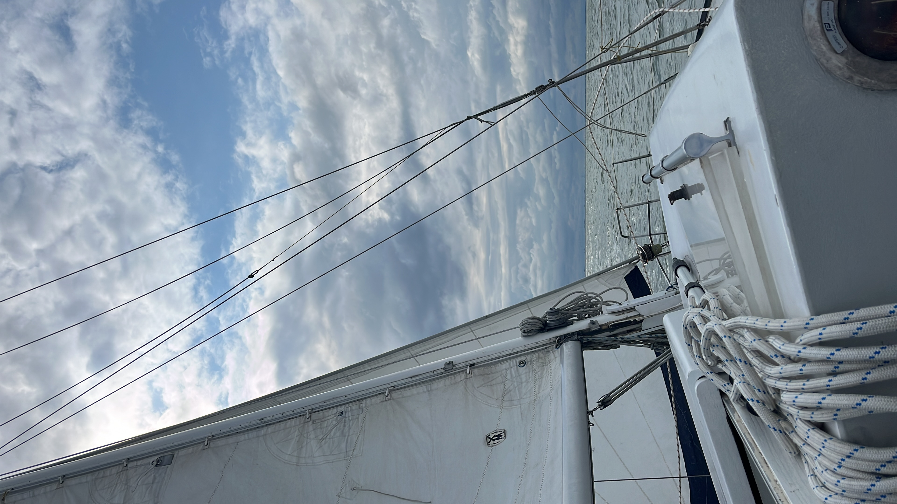
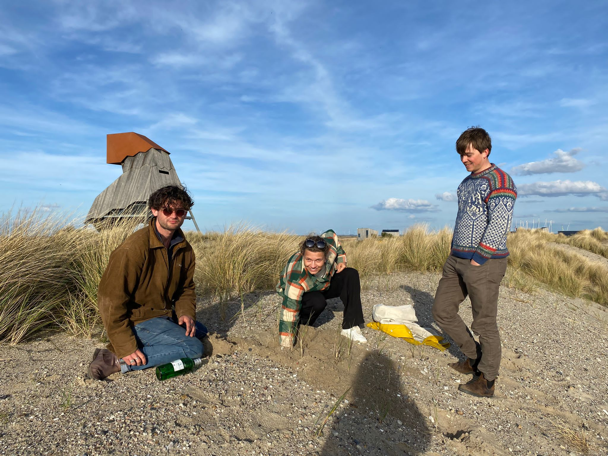
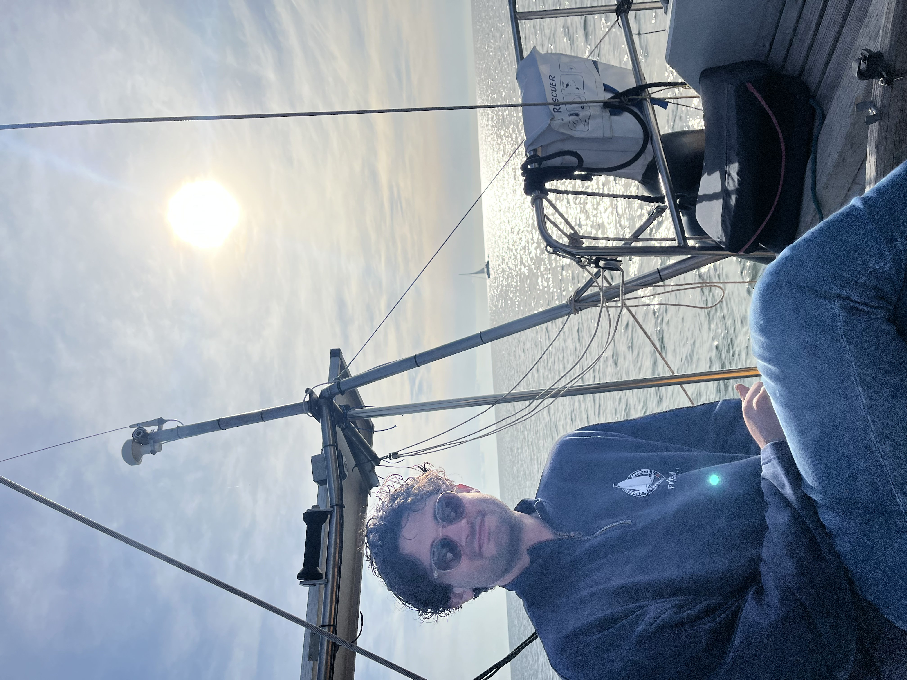
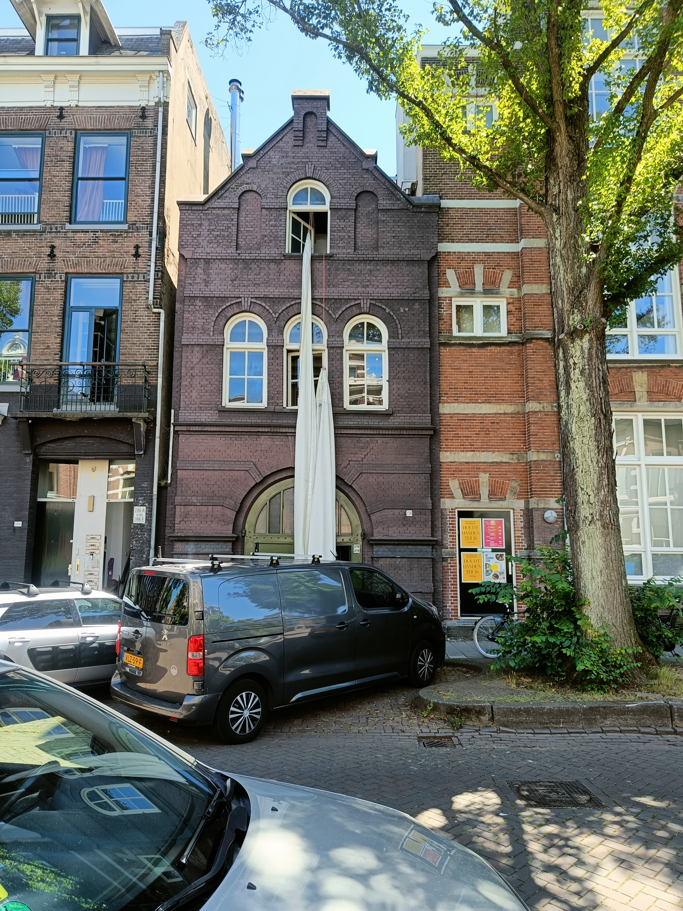

Het is een mythische plek voor mij, voor ons en vele andere zeevaarders. De Azoren. Op de rug van Atlantis, midden in de oceaan verrijzen de punten vanuit de ruim 4.000 meter diepte. In zekere zin zij...
We liggen strak tegen de pier aangedrukt. Onze stootballetjes zijn platgedrukt en houden onze gele verf nog maar een centimeter van de groen uitgeslagen kadewand. De wind die het lagedrukgebied met zi...
Zestien etmalen en een paar uur. Het scheelt er maar eentje met de oversteek naar Suriname. Luwte ligt zo goed als binnen de pieren van IJmuiden. Meer dan 13.000 zeemijlen op de teller en een bak aan ...
50°38'N, 00°00'E Het Kanaal is hobbelig. Dat waren we even vergeten. Ondanks de waarschuwingen van mijn ouders die hier twee weken geleden nog voeren. Na drie dagen opkruisen met stroom-tegen-wind afw...
We varen met een rustig windje richting Otter Harbour. Voordat we de Bras d'Or verlaten moeten we eerst nog door de Big Bras d'Or . Een nauwe doorgang tussen de rotsen naar zee. beide binnenmeren late...
49°49'N, 04°35'W Omstreeks 200800Z (ofwel 20 augustus 00.00 UTC) glijden we over de meridiaan van Lizard Point. Het Zuidwestelijke puntje van Engeland en een van de grote kapen. Daarmee zijn we "binne...
47°32.49'N, 11°31.30W Elke lange tocht die we hebben gehad heeft een hobbel. Een kink in de kabel naar onze bestemming toe. Het weer om ons heen verandert continue en de voorspellingen waarop wij vert...
We worden wakker met een waterig zonnetje dat door de ramen van het dekhuis naar binnen schijnt. Het licht sprankelt door de condens aan de binnenkant van de ramen en nadat ik het knopje van de kachel...
Gisteren markeerden twee echte mijlpalen. Op zo'n beetje hetzelfde moment passeren we de 12.000 zeemijlen in ons kielzog en de 1.000 zeemijlen voor de boeg naar IJmuiden. Een vrolijke walvis kwam ons ...
42°41'N, 26°13W Een korte update: Eerste etmaal heeft onze motor vrolijk staan brommen op een vlakke en windstille zee. Naast de boot dolfijnen, pilot whales, zeeschildpadden en scholen Mahi Mahi (die...
Na een zinderend weerzien met Horta, waar mijn goede herinneringen werden uitgediept en aangevuld, kregen we 10 dagen bezoek van de vader van Jen, Doeke, Map, Jools, Logan en Madelief. Tien dagen op v...
’s Nachts plot ik onze route aan de lopende band opnieuw. Nog altijd een beetje vertwijfeld over onze keuze. Er zijn twee routes door de golfstroom heen. Via het westen, of via het oosten. De Engelse ...
38°31.811’N, 28°37.493W – Horta, Faial 11:39 lokale tijd gooien we de lijntjes over de kikkers van de aanmeldsteiger te Horta. De kade, die beroemd is om haar duizenden schilderingen achtergelaten doo...
Gisterochtend doorbraken we ons westelijke avontuur en voeren we het “Europese kaartgebied” weer in op onze kaartplotter. Na drie etmalen potdichte mist breekt de lucht open en zien we voor het eerst ...
Vooralsnog verloopt alles voorspoedig. De eerste 24 uur hebben we flink gehobbeld op de restanten van het overgetrokken laag waar we achter zaten. Twee zeeziektepillen en veel slaap hebben ons er door...
Vijf dagen geleden zat ons grote internationale avontuur er op. Vanaf Grand Bank, Newfoundland, zeilden we naar het voor de kust gelegen St. Pierre & Miquelon. Franse vlaggen wapperen rustig naast...
Over Bermuda zelf valt naar onze mening weinig interessants te vertellen, op de ligging er van na. Vonden wij dan. We zijn maar een dag of vijf op dit vervreemdende eiland geweest en hebben het wellic...
In de luwte van de eilanden zeilen we in een strakke lijn naar boven. We zien de oude vulkaantoppen aan ons voorbijglijden en zijn hier en daar wel benieuwd hoe het er uit ziet, maar dat hebben we van...
We hoeven er geen doekjes meer om te winden. Martinique was functioneel én bijzonder met het bezoek van Pat en Mark, maar nu zij weer op het vliegtuig zijn blijft er voor ons niet zoveel meer over om ...
Het is een beetje een mijl op zeven, om vanaf de boot voor Anse d’Arlet een auto te regelen, naar het vliegveld te gaan en daar Patty en Mark op te pikken. Een taxi had het een stuk efficiënter gemaak...
Het lijkt wel alsof we in herhaling vallen, maar ook de overtocht van Bequia naar Martinique krijgen we niet cadeau. Hoewel we onszelf wat beter hebben voorbereid en de dinghy dit keer niet met motor ...
In het rijtje met bubbelflessen dat we voor vertrek in Luwte’s buik verstopten zat er geen voor Nova Scotia, maar gelukkig hebben we één joker mee: Bestemming onbekend. Zeven etmalen van Bermuda, vijf...
41°12.600N, 62°09.722W Onze lakmoesproef van het zeezeilen kun je wel zeggen. Inmiddels zijn we vier dagen verder vanaf Bermuda, wat voelt als een vage herinnering die niet helemaal meetelt. Voor ons ...
35°33.168N, 62°47.988W Zo’n 48 uur geleden trokken we ons anker weer uit het zand van Bermuda en lieten we ons door het smalle kanaaltje naar buiten glijden. Het was een kort onthaal op Bermuda, waar ...
Bermuda baby! Na acht etmalen zee doemt dan opeens vlak voor onze neus een platte pannenkoek op. Midden in de oceaan. De restanten van een oude vulkaan die nog net boven het water uitsteken: Bermuda. ...
27°39.347N, 64°18.876W | 12:00 lokale tijd De dagen lopen inmiddels in elkaar over terwijl we naar het Noorden trekken. We zitten allebei goed in ons vel en slapen en eten goed. Daarbij worden we onde...
Het voelt inmiddels als een muizenstukje, zo’n nachtje doorvaren, maar dat maakt het er niet minder zwaar op. Juist bij zo’n enkele nacht is het verleidelijk om het wachtritme een beetje op gevoel te ...
19°52.968N, 63°12.028W Een kleine 24 uur geleden gooiden we onze lijnen los van Sint Maarten en kiest Luwte koers naar het Noorden. Slechts drie dagen voor ons geplande vertrek mochten we ein-de-lijk ...
Een nieuw hoofdstuk ontvouwt zich. We maken ons klaar om weer naar zee te gaan vanuit Suriname. De boot heeft voor een maand haar plicht vervult als ‘woonruimte’ en dat betekent dat veel spullen niet ...
Bijna de hele dag zijn we bezig met verhuizen. Door de week met mijn familie heen hebben we de boot leeggehaald en alle spullen naar het huis getrokken waar we logeerden. Gelukkig hebben mijn ouders h...
We laten de moorring los en varen met de stroom mee de jungle in, beleven spectaculaire avonturen en laten ons dan afzakken naar zee. Onze honger naar blauw water met witte stranden is aangewakkerd en...
We hobbelen het parkeerterrein van het kleine vliegveld op, krijgen een kaartje uit de automaat en lopen door de licht verkoelende regen naar de terminal. Als een soort erehaag staan enkele honderden ...
Terwijl squall na squall over ons heen trekt turen we naar de horizon. Sinds een paar uur beginnen er schepen op de AIS te verschijnen. We spotten een vissersboot op ramkoers die niet zichtbaar is op ...
Op naar blauw water. Na ruim drie fantastische weken in het prachtige Suriname gooiden we vandaag weer volgetankt met water, diesel, kola-stroop, pindakoeken, massala en vooral heel veel mooie herinne...
Terwijl Neptunus ons verwelkomt als oceaanzeilers, wij boeken lezen en lange gesprekken voeren, komt Suriname als vanzelf dichterbij. Als we het continentaal vlak naderen beginnen de regenbuien zich a...
we zijn een paar dagen verder en al helemaal geland in het prachtige en bijzonder vriendelijke Suriname. De oversteek voelt alweer bijna als even geleden, hoewel alles nog vers in ons geheugen zit. Vo...
06° 04.9609'N, 055° 13.0378'W - Uiterboei Surinamerivier 29-01-2025 14.34 Na twee bewogen etmalen vol met squalls, windvlagen van over de 45 knopen en een oceeandeining het langzaam moest opgeven ten ...
08º25.080N, 51º08.410W Niet lang na het bezoek van Neptunus begint het aftellen al. We moeten nog minder dan 1.000 mijl, zijn over de helft en hebben inmiddels wel zin in roti. Inmiddels heb ik alle d...
11º14.466N 40º50.447W Het is een groot blauw niets dat met de minuut van gedaante kan wisselen. Even hypnotiserend als een kampvuur waar je de hele avond in kunt staren. Overdag vormen de schuimkoppen...
De boot is bijna klaar. We moeten nog wat opruimen en laatste boodschappen doen, maar alle preflight checks zijn uitgevoerd en met vlag en wimpel geslaagd. We kunnen met een gerust hart vertrekken, we...
Zo’n twee etmalen voor we Mindelo verwachten binnen te lopen spendeer ik de hele ochtend aan het op gang krijgen van OpenCPN . Dat is een open-source software waarmee je zelfgemaakte, of van een conta...
Na ruim twee weken genieten, klussen, griepen en een heel aantal borrels is het tijd voor het grootste avontuur van onze reis tot nu toe: De Atlantische Oceaan. Vandaag, 12 januari 2025 om 13:00 lokal...
Nog geen half uur later pikt de wind op. We hijsen het grootzeil en rollen de fok uit. Tegen de tijd dat ik weer terug in de kuip sta kan ik me meteen weer vastklikken aan de lifelines die van het ach...
La Gomera is een veel kleiner, groener en kneuteriger eiland. Bij aankomst staat een Mariñero op de steiger te wachten om ons in de box te leggen. Gelukkig is dit er eentje die zich niet teveel bemoei...
16°53.097N 24°59.335W 25 december 2024 11:02 UTC Kerst op de Kaap Verden. Jen had haar zinnen er op gezet en hoewel ze mij nog even om de tuin wist te leiden door het compromis te sluiten dat we kerst...
22°36.328N 021°27.484W We zijn inmiddels bijna halverwege onze oversteek naar de Kaap Verdische eilanden. Alles gaat tot nu toe goed. Het duurde wat langer dan normaal voordat we er allebei helemaal l...
26°20.106N 019°11.830W Inmiddels zijn we 40 uur geleden vertrokken vanaf Santa Cruz La Palma, richting Mindelo op de Kaap Verden. Met zo’n 850 mijl de langste tocht tot nu toe. Na twee dagen weinig sl...
En dan maken we opeens een grote klapper. We zakken bijna tien breedtegraden naar het zuiden in zes en een halve dag. Ter vergelijking, in de afgelopen vijf maanden zeilden we van Amsterdam zo'n 15 br...
Iets voor Faro bekijken we dan nog één keer de data: hoe waait de wind de komende 6 uur? Hoe laat gaat de zon onder? Wanneer is het laag water bij de riviermonding? En niet geheel onbelangrijk: hebben...
28 06.986N, 15 24.761W ; 25/11/2024 11:30 UTC Zes etmalen en zes uur verder. Luwte ligt achter haar anker in de haven van Las Palmas, Gran Canaria. De afgelopen 48 uur hadden veel in zich. Mama’s lijf...
30°24.441N 12°42.482W We kijken terug op twee etmalen prachtig zeilweer over een tamme Atlantische oceaan. Er staan kleine kabbelende golfjes bovenop de trage , lange deining richting het zuiden. Om o...
Huidige positie 33°49.305N 009°42.962W Tot zover een voorspoedige tocht. De eerste 12 uur moeten motoren, maar dat was gepland om daarna in goede wind te komen richting het zuiden. Die voorspelling ko...
Deel twee van Jen's Algarve is in productie en volgt snel. Vooruitlopend op de zaken een update over de afgelopen dagen. Het is tijd voor groot water. De komende zeven a tien dagen kijken wij naar 360...
In een werveling van onze verhoudingen lukt het mij tegenwoordig ook af en toe een foto (of selfie) van Jen te maken. Oefening baart kunst, maar op een dag zal er misschien ook eens iets van mij op de...
Cascais verwelkomt ons hartelijk. Een stukje daarvoor zijn we Cabo Raso gerond en voelen we hoe de Noord-Westelijke deining in rap tempo afneemt. De wind en de resterende deining draaien met ons ...
De wekker gaat om 03.30. Een beetje katerig staan we op en beginnen met de voorbereidingen om te vertrekken. Anders dan het baaitjeshoppen dat we tot nu toe deden, gaan we nu een grotere klap maken en...
Het is me toch echt overkomen: Een writersblock . Zo erg, dat Jen mij zelfs heeft moeten aanmoedigen weer verder te schrijven. Het stukje waaraan ik begonnen was over het deel na Fisterra wilde maar n...
Als we 's ochtends de touwtjes van de haven van Coruña los hebben gegooid en onze buren tot ziens hebben gezegd, drijven we de haven uit. Er staat minder wind dan voorspeld, dat is een terugkerend fen...
Met zin- en tegenzin halen we het anker op in Cedeira om richting de haven van A Coruña te varen. Ankeren, havens aandoen en havens verlaten is zo oud als het varen en daarmee ook de discussie hoe je ...
We gaan een beetje hoppen en plakken in de tijd en ruimte. Luwte ligt inmiddels in het Spaanse A Coruña, maar het (b)logboek moest nog vanaf Plymouth worden bijgewerkt. Aanloop Plymouth Ons vrij plots...
43°39.194'N, 008°03.927'W - Cedeira Na 4,5 etmaal op zee laten we het anker vallen in Cedeira, Spanje. Een bliksembezoek aan Engeland vanwege het weer heeft ons er niet van weerhouden. Op 02-10-2023, ...
Wat hebben we er naar uitgekeken en wat hebben we er al veel over gezegd, maar het was dus toch eindelijk zover. Zoet werd zout, beschut werd bloot. Dinsdag 16 en woensdag 17 juli lagen wij nog even i...
50°21.562'N, 004°06.219'W - Plymouth Yacht Haven Na twee rustige etmalen hebben we het wat sportiever gekregen. De wind draaide en trok aan zoals voorspeld, en zowel het zeilen als het honkebonken teg...
50°39.445'N, 000°04.323'W Twee rustige dagen met weinig wind achter de rug en we bevinden ons inmiddels op de Westelijke helft van deze aardbol. Motor heeft een aantal uren gedraaid, maar we hebben oo...
We zijn (bijna) vertrokken. De laatste twee weken voor onze afscheidsborrel waren hectisch, met korte nachten en lange, intensieve dagen. Onze uitzwaaiborrel begon om 18.00 en ik besloot, op lang aand...
De laatste loodjes wegen het zwaarst, maar zijn tegelijkertijd het leukst. Al het harde werk aan het goed klaarmaken van het schip komt uiteindelijk samen in de afwerking: De laatste laag geel, de laa...
Als ik wat tijd over had zou ik nu een soort anonieme stembus inlassen waarin iedereen zijn of haar eerste gedachte bij 'die allereerste' zou kunnen insturen. De verhalen kunnen vaak maar beter anonie...
Nog een paar weken tot ons geplande vertrek. Vanaf dan kiezen we voor een lege planning en dat houden we ook graag even zo, al hebben we de neiging om al stiekem om het hoekje te kijken af en toe. Voo...
Zelf heb ik er nooit zo heel veel mee gehad. Het hele idee van yoga. Dat komt misschien wel omdat iedereen met het begrip aan de haal is gegaan en je je dus kunt afvragen of er nog iets bestaat zoals ...
Scrummen, hoewel een beetje overgenomen door de software en dienstverlenende wereld kent zijn oorsprong eigenlijk vanuit het rugbyen. Dat ziet er zo ongeveer uit zoals hierboven. Na een spelhervatting...
Doordat we een beetje afgeleid waren met verhuizen, is het er een bij ingeschoten om vroegtijdig op zoek te gaan naar een plek om de boot nog een keer de kant op te krijgen voor onderhoud. Nederland k...
Inmiddels zijn we geworteld aan de Tasmanstraat. De gasten die langskomen kijken hun ogen uit en de opmerking "Maar nu je dit net hebt, weet je wel zeker dat je nog weg wilt?" is al meermaals de revue...
En zo vliegen de dagen voorbij en veranderen ze in weken en eigenlijk kunnen we al spreken over maanden. 23 december schreef ik over ons aanstaande huwelijk met Elon Musk. Dat bleek een gelukkig huwel...
Inmiddels zijn we weer een paar weken verder en nadert het einde van dit kalenderjaar. De haven is in winterslaap gegaan en ondanks de ambitie om ook deze winter regelmatig naar de boot te gaan, is he...
De lijst met to-do's, to-build's to-think-of's en andere dingen die met 'to' beginnen wordt langer en de tijd die we hebben om er een vinkje achter te zetten gestaag korter. Bij ons op de werkvloer wo...
De box van de Luwte, nummer 10 op de steiger van Marken, heeft natuurlijk vóór onze aankomst op Marken dienst gedaan als ligplaats voor voorgaande zeilschepen.
Afgelopen week kregen wij de jaarlijkse mail over de gangvan zaken binnen de verdeling van ligplaatsen voor het komende seizoen. Dat is vrij eenvoudig voor degenen die al een ligplaats hebben en blijv...
Een nieuwe start voor S.V. Luwte's blog na verlies van oude verhalen. Terugblik op zeilavonturen van Amsterdam naar Marken, met komische uitdagingen zoals verloren brugsleutels. Twijfel over waar te b...